채널: 레디포그로스 (Ready For Growth) | 길이: 14:46 | 날짜: 2026-03-20
됐다, 억지로 채웠다, 또 하고 싶다 같은 한 줄 감각 기록만 남기라고 한다. 이 작은 기록들이 쌓이면 방향은 고민으로 ‘발견’되는 것이 아니라 반복된 시식 속에서 ‘걸러진다’는 것이 영상의 결론이다.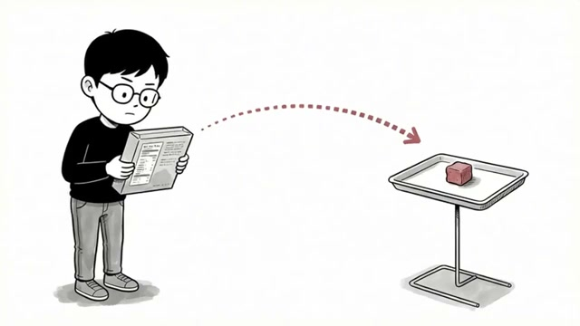
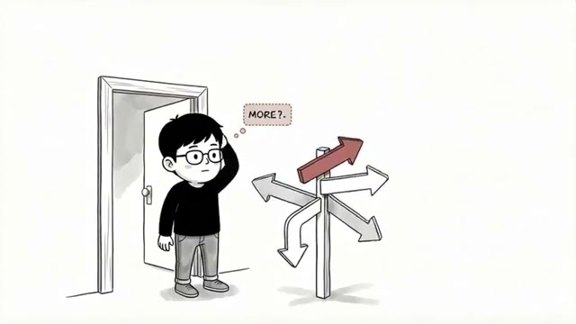
영상은 처음부터 커리어 문제를 과자 구매 비유로 번역한다. 새 과자를 살지 말지 고민하는 사람은 패키지에 적힌 “고소하고 담백한 맛”, “기존 제품 대비 당 함량 30% 감소”, “남녀노소 누구나” 같은 문구를 꼼꼼히 읽지만 정작 중요한 ‘내가 좋아할 맛인가’는 끝내 알지 못한다. 바로 옆 시식 코너에서 한입 먹는 순간 3초 만에 결론이 나는 것처럼, 커리어도 직무 설명과 조언을 무한히 읽는다고 풀리지 않는다고 선언한다. segment_000은 설명서를 읽는 인물과 멀리 놓인 붉은 큐브 형태의 시식 대상 사이에 점선 화살표를 그려, 추상적 정보에서 직접 경험으로 넘어가야 함을 상징한다. segment_001의 여러 방향 화살표와 MORE? 말풍선은 상담과 정보가 때로는 방향을 좁혀주기보다 선택지를 더 늘려 혼란을 키울 수 있음을 시각화한다.
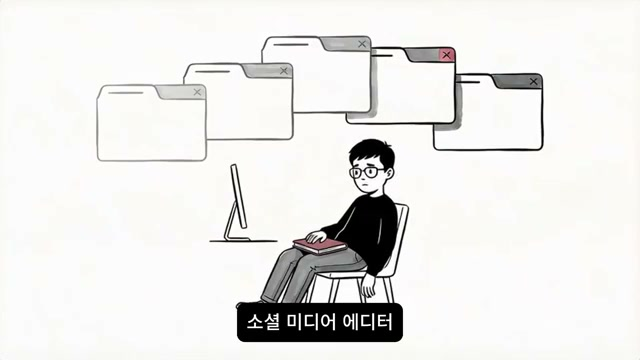
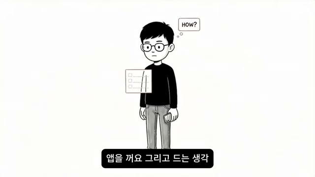
A는 커리어 상담을 받기 전에는 “이제 좀 보이겠지”라고 기대했지만, 상담을 마친 뒤 떠오른 생각은 오히려 “선택지가 더 늘었어”였다. 상담에서 얻은 것은 창의적 문제 해결, 사람과의 연결, 자율적 환경 같은 추상적 자기이해 키워드였고, A는 그것을 카페에서 수첩에 옮겨 적으며 오래 들여다본다. 문제는 이 키워드들이 “이게 나인 건 알겠는데, 그래서 무슨 일을 해야 하는가”라는 질문에는 답하지 못한다는 점이다. A는 결국 “창의적 직업 추천”을 검색하고 UX 디자이너, 카피라이터, 콘텐츠 기획자, 브랜드 매니저, 소셜미디어 에디터 등 다섯 개 직무 탭을 연다. segment_002는 컴퓨터 위로 겹겹이 떠 있는 탭 창과 함께 “소셜 미디어 에디터”라는 자막을 보여 주며 A의 인지적 과부하를 드러내고, segment_003의 HOW? 말풍선과 체크리스트 패널은 준비 방향 자체를 모르는 상태를 압축해서 보여 준다.
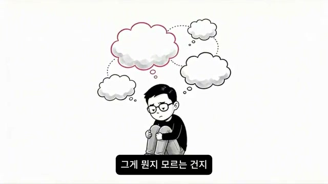
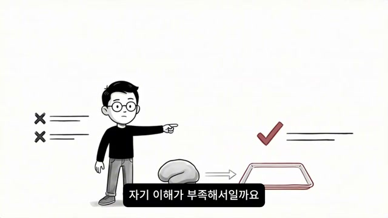
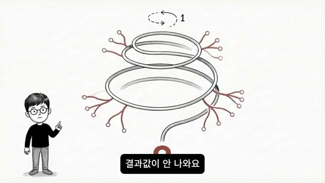
A는 며칠 뒤 점심시간에 구인 앱을 열어 실제 공고를 보지만, 콘텐츠 마케터 공고는 포트폴리오 필수, 브랜드 기획 MD는 유통업계 경험 우대, 에디터는 글쓰기 샘플 3편 이상이라는 조건에서 차례로 멈춘다. 그래서 “준비가 되면 지원해야지, 그런데 뭘 준비해야 하는지를 모르겠어”라는 말로 돌아가고, 퇴근길 버스 창문에 비친 자기 얼굴에서 단순 육체 피로가 아니라 오래 헤맨 사람 특유의 피로를 본다. 화자는 이 상태를 “좋아하는 게 없는 건지 너무 많은 건지도 모르겠다”, “아무것도 안 한 것 같은데 엄청나게 지쳐 있다”는 자기 대화의 누적으로 묘사한다. 이어 A의 문제는 의지 부족이나 자기 이해 부족이 아니라고 명확히 반박하고, 뇌가 경험하지 않은 것에는 신호를 만들 수 없기 때문이라고 설명한다. segment_004의 여러 생각 구름은 끊임없는 자기 질문을, segment_005의 X표/체크 대비는 원인 오진과 원인 수정의 과정을, segment_006의 순환 루프와 “결과값이 안 나와요” 자막은 데이터 없는 시뮬레이션이 끝없이 맴도는 구조를 시각화한다.
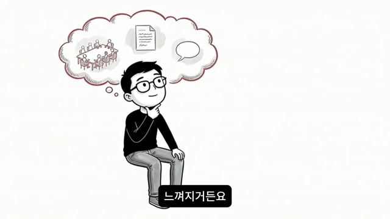
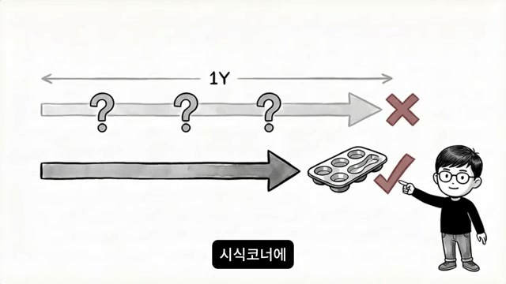
화자는 INFP 같은 내향적 탐색 성향일수록 머릿속 시뮬레이션이 실제 경험처럼 풍부하게 느껴질 수 있다고 지적한다. 콘텐츠 기획자로 일하는 자신을 상상하면 어떤 회의를 하고, 어떤 글을 쓰고, 어떤 피드백을 받는지까지 꽤 구체적으로 그려지지만, 뇌는 그 상상을 경험 데이터로 처리하지 않는다. 그래서 아무리 생생한 상상도 실제로 30분 해본 감각을 대체하지 못하고, A는 1년 동안 방향을 못 찾은 것이 아니라 뇌가 절대 답을 낼 수 없는 방식으로만 질문하고 있었던 셈이 된다. segment_007은 구름 속에 회의, 문서, 말풍선을 넣어 상상이 얼마나 구체적일 수 있는지를 보여주지만, 동시에 현실과 분리된 구름의 경계가 있다는 점을 강조한다. segment_008은 1Y가 적힌 긴 탐색 시간과 짧은 시식 트레이를 대비시켜, 긴 고민보다 짧은 체험이 더 많은 정보를 줄 수 있다는 이후 전개의 전조가 된다.
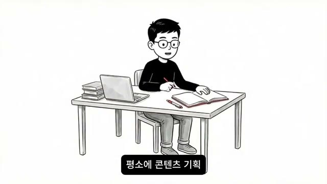
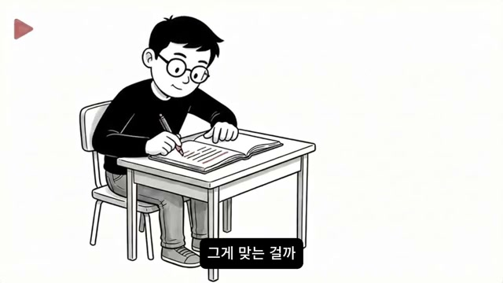
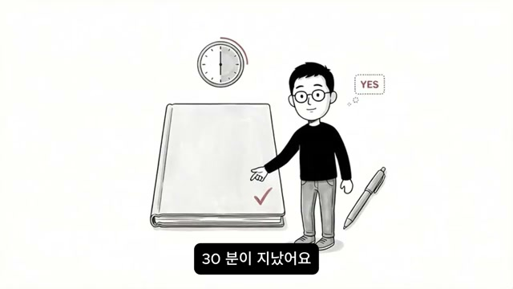
B는 어느 날 밤 특별한 결심 없이 “오늘은 읽는 대신 해보기로” 한다. 콘텐츠 기획이 궁금했지만 유튜브 강의나 관련 책을 더 찾는 대신, 평소 청소할 때 즐겨보는 유튜브 채널 하나를 고르고 최근 영상 5개 제목을 적은 뒤, “이 채널이 다음 달에 올리면 어울릴 주제는 무엇인가”, “왜 그게 이 시청자에게 맞는가”를 직접 써본다. 그 과정에서 손이 움직이기 시작하고 아이디어가 꼬리를 물며 나오자, B는 분석한다기보다 채널과 대화하는 느낌을 받는다. 30분이 지나도 더 하고 싶었고, 억지로 멈춘 뒤 메모장 아래에 딱 두 글자, 됐다를 적는다. segment_009와 segment_010은 책과 노트, 펜, 책상만 남겨 정보 소비보다 생산 행위로 전환된 상태를 보여주며, segment_011의 큰 노트, 체크 표시, YES 말풍선은 첫 번째 시식이 긍정적 신호를 줬음을 명시적으로 시각화한다.
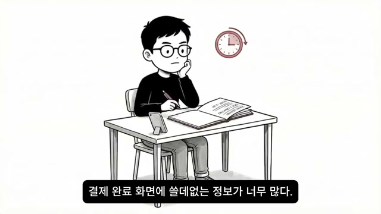
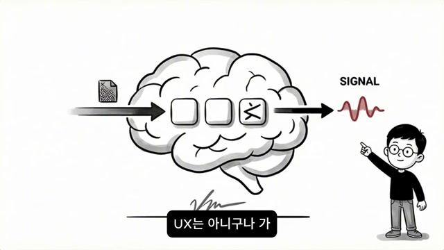
3일 뒤 B는 UX 쪽을 시식한다. 자주 쓰는 배달 앱을 열고 “리뷰 페이지 들어가는 동선이 너무 깊다”, “결제 완료 화면에 쓸데없는 정보가 너무 많다”, “주소 저장 기능이 직관적이지 않다” 같은 문제를 적기 시작하지만, 15분쯤 지나자 손이 느려지고 무엇을 고쳐야 좋을지는 감이 오지 않는다. 결국 30분을 억지로 채운 뒤 “억지로 채웠다”, “다시 하고 싶지 않다”라고 기록하는데, 화자는 이것이 곧바로 “UX는 절대 아니다”라는 확정 판단은 아니더라도, 지금 이 방식에서는 에너지가 나지 않는다는 감각 데이터를 뇌가 처음 받은 순간이라고 해석한다. segment_012는 실제 자막으로 “결제 완료 화면에 쓸데없는 정보가 너무 많다.”를 보여 주어 B가 추상 평가가 아니라 구체적 UI 문제를 잡고 있었음을 보여 준다. segment_013은 뇌 안에 들어온 입력이 몇 개의 처리 칸을 통과한 뒤 SIGNAL이라는 파형으로 나오는 그림을 통해, 영상 전체의 핵심 개념인 “몸과 뇌의 반응 신호”를 도식화한다.
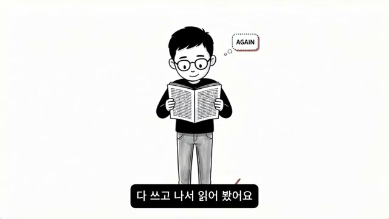
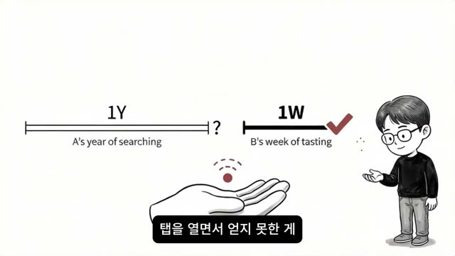
4일 뒤 B는 글쓰기를 시식한다. 특별한 주제 없이 머릿속에 자꾸 맴도는 생각 하나를 골라 메모장을 열고, 맞춤법도 구성도 신경 쓰지 않은 채 생각이 흐르는 대로 30분 동안 써 내려간다. 손이 멈추지 않았고, 시간이 빠르게 갔으며, 다 읽고 나서는 “이거 좀 더 다듬고 싶다”는 마음이 올라왔다. 그래서 B는 됐다, 또 하고 싶다라고 적고, 마침내 콘텐츠 기획, UX, 글쓰기라는 세 개의 비교 가능한 기록을 갖게 된다. segment_014의 AGAIN 말풍선은 반복 욕구를, segment_015의 1Y와 1W 비교 도식은 A가 1년간 얻지 못한 감각 신호를 B가 1주일 안에 확보했다는 서사의 압축판 역할을 한다.
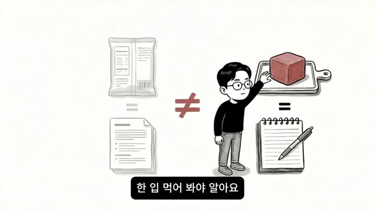
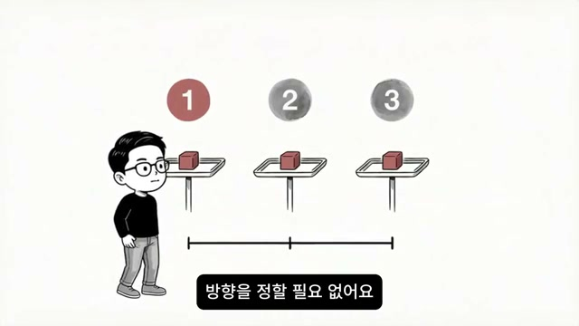
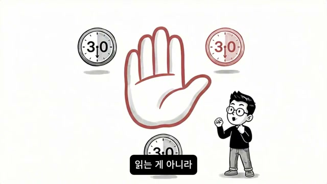
B는 세 개의 기록을 나란히 놓고 본다. 콘텐츠 기획은 “30분이 모자랐다/됐다”, UX는 “30분을 억지로 채웠다/다시 하고 싶지 않다”, 글쓰기는 “시간이 빠르게 갔다/또 하고 싶다”로 구분된다. 화자는 이것을 분석이나 이론이 아니라, 뇌가 실제 경험하고 난 뒤 보내는 신호라고 강조하며, A와 B의 차이는 능력 차이나 고민의 깊이 차이가 아니라 시식 횟수의 차이라고 못 박는다. 더 나아가 B는 1년 동안 총 12번의 시식을 했고, 그중 다시는 안 하겠다는 것이 7개, 한 번 더 해볼 수 있겠다는 것이 4개, 계속 하고 싶다가 1개였으며, 그 마지막 하나가 지금의 방향이 되었다고 설명한다. segment_016은 패키지/문서와 실제 체험/메모 사이에 큰 부등호가 아닌 ≠를 그어 “읽는 것과 해보는 것은 같은 종류의 정보가 아니다”를 보여 주고, segment_017과 segment_018은 번호가 붙은 세 번의 시식과 세 개의 30 시계를 통해 반복성과 짧은 실험 단위를 강조한다.
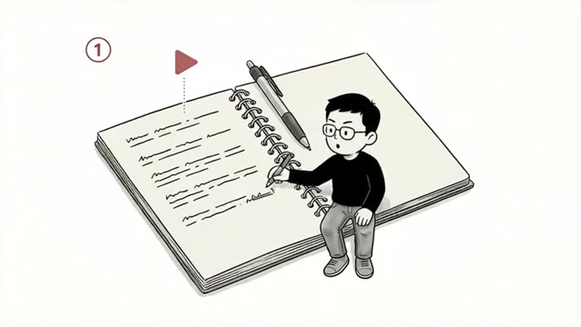
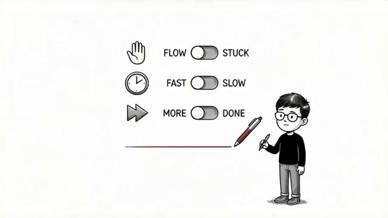
후반부에서 영상은 메시지를 구체적 매뉴얼로 바꾼다. 시청자는 지금 당장 진로를 확정할 필요가 없고, 이번 주에 시식 코너를 세 번만 가보면 된다고 말한다. 분야 선정 기준도 ‘잘할 수 있는 것’이 아니라 언젠가 이쪽은 어떨까 싶었던 것, 관련 영상을 이상하게 끝까지 본 적 있는 것, 인터뷰를 읽다가 스크롤을 멈춘 적 있는 것 정도의 미세한 호기심이면 충분하다고 한다. 단, 절대 지켜야 할 규칙은 읽는 것이 아니라 손이 움직이는 행동이어야 한다는 점이다. segment_019는 노트와 펜, 재생 버튼 표식, 번호 1로 첫 실험의 출발을 나타내고, segment_020은 FLOW/STUCK, FAST/SLOW, MORE/DONE 세 축으로 시식 후 확인해야 할 감각 기준을 영어 토글 형태로 제시해, 평가가 정답 여부가 아니라 몰입감·시간감·추가 욕구에 달려 있음을 보여 준다.
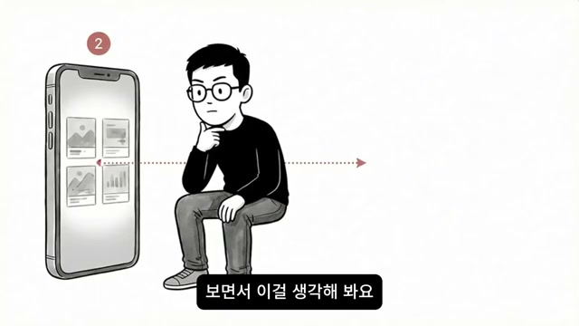
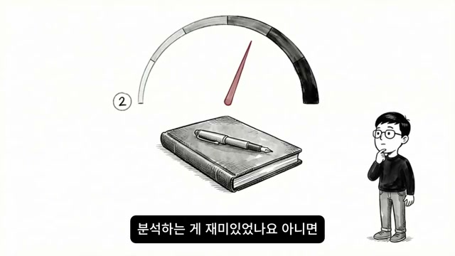
브랜딩이나 마케팅이 궁금한 사람에게 화자는 평소 좋아하는 브랜드 하나를 고르라고 제안한다. 카페, 옷 브랜드, 문구점 어떤 것이든 괜찮고, 그 브랜드의 인스타그램을 열어 최근 게시물 10개를 본 뒤 “이 브랜드는 누구에게 말을 걸고 있는가”, “어떤 감정을 만들고 있는가”, “내가 담당자라면 이번 달에 어떤 게시물을 올릴까”를 메모장에 적으라고 말한다. 이때 브랜드가 쓰는 단어들, 색감, 사진 톤, 그리고 내가 제안하고 싶은 다음 캠페인까지 끌어내야 하며, 역시 목표는 30분 동안 손을 멈추지 않는 것이다. 끝난 뒤에는 아이디어를 억지로 짜냈는지, 적다 보니 계속 나왔는지, 분석 자체가 재미있었는지, 무엇을 써야 할지 몰라 멍했는지, 30분이 충분했는지 부족했는지를 한 줄 감각으로 적는다. segment_021은 피드형 스마트폰 UI와 생각하는 인물로 실제 브랜드 관찰을, segment_022는 게이지와 노트로 분석 에너지의 크기와 지속감을 시각화한다.
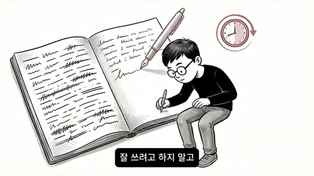
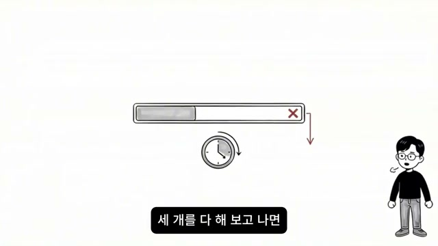
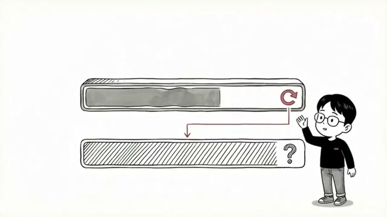
글쓰기나 에디터 계열이 궁금한 경우에는 오늘 하루 중 한 번이라도 맴돌았던 생각 하나면 충분하다. 퇴근길 생각, 밥 먹다 떠오른 생각, 막연한 감정 등 무엇이든 메모장을 열고 적되, 맞춤법, 구성, 잘 쓰려는 태도를 모두 잠시 내려놓고 30분 동안 손을 움직여야 한다. 막히면 “지금 뭘 써야 할지 모르겠다”는 말까지 그대로 쓰라고 하며, 중요한 것은 멈추지 않는 것이다. 끝난 뒤에는 답답했는지, 쓰다 보니 풀리는 느낌이 있었는지, 비어 있는 느낌이 남았는지, 아니면 더 다듬고 싶은 욕구가 생겼는지를 적고, 이 감각이야말로 데이터라고 말한다. segment_023은 거대한 열린 노트에 미완의 글 흔적이 남는 장면으로 자유쓰기의 흐름을 보여 주고, segment_024는 채 끝나지 않은 진행 바와 시계를 통해 “30분이 길게 느껴지고 손이 느려지는 경우”, segment_025는 한번의 데이터가 애매할 때 방식을 바꿔 다시 해보라는 재시도 원칙을 진행 바와 순환 화살표로 보여 준다.
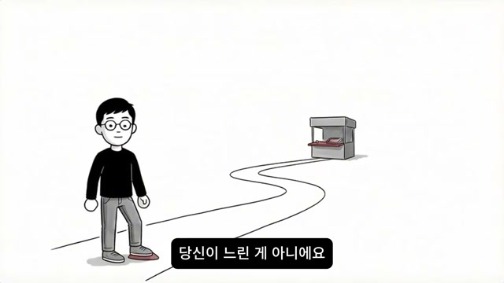
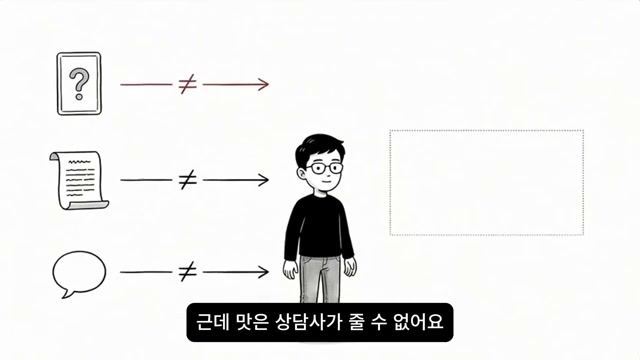
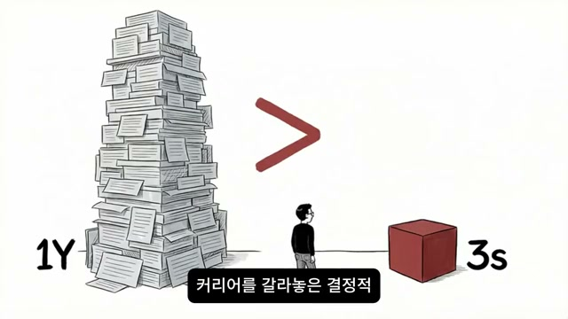
영상은 마지막에 “당신이 느린 게 아니다”라고 말하며 죄책감의 방향을 바꾼다. 1년째 방향을 못 찾은 것은 머리가 나빠서도, 추진력이 없어서도 아니라, 시식 코너에 한 번도 가보지 않았기 때문이며, 방향은 고민으로 나오지 않고 고민은 방향이 보인 뒤 그것을 정교하게 다듬는 도구라고 정리한다. 커리어 상담, 강점 카드, 직무 설명은 “어떤 맛을 찾아야 하는가”라는 질문을 선명하게 만들 수는 있어도, 그 맛 자체를 줄 수는 없고, 그 역할은 오직 직접 해본 뒤의 몸과 뇌가 맡는다. 그래서 화자는 “늘 밤 딱 한 가지만 골라서 30분 해봐라, 방향을 찾으러 가는 게 아니라 처음으로 시식 코너에 가는 것”이라고 조언한다. segment_026의 길 끝에 있는 작은 부스는 바로 그 시식 코너를, segment_027의 휴대폰/문서/말풍선과 인물 사이의 ≠ 기호는 상담과 정보가 체험의 대체물이 아님을, segment_028의 1Y 종이 더미와 3s 붉은 큐브 대비는 “1년치 패키지 설명보다 3초의 한입이 더 많은 것을 알려준다”는 영상의 결론을 가장 직접적으로 압축한다.
“한입 먹어요. 3초 만에 알아요. 커리어도 똑같아요.”
“우리는 1년째 패키지 뒤만 읽고 있어요.”
“선택지가 더 늘었어.”
“아무것도 안 한 것 같은데 엄청나게 지쳐 있어요.”
“뇌한테 한 번도 시식을 시켜본 적이 없어서예요.”
“상상은 상상이고 감각은 감각이에요.”
“분석이 아니에요. 이론이 아니에요. 뇌가 실제로 경험하고 나서 보내는 신호예요.”
“방향을 찾은 게 아니에요. 시식을 반복하다 보니까 자연스럽게 걸러진 거예요.”
“읽는 게 아니라 손이 움직이는 걸 해야 해요.”
“방향은 고민으로 나오지 않아요. 고민은 방향을 정교하게 다듬는 도구예요.”
“맛은 직접 먹어봐야 알아요. 작게 짧게 일단 한 입.”
“방향을 찾은 사람은 찾은 게 아닙니다. 시식을 멈추지 않은 사람입니다.”
이 영상의 핵심 메시지는 진로 역전의 결정적 차이가 ‘더 많이 아는 것’이 아니라 ‘작게 직접 해보는 것’에 있다는 점이다. 자기이해, 상담, 강점 카드, 직무 설명, 검색, 탭 정리는 모두 질문을 다듬는 데는 유용하지만, 어떤 일이 내 몸과 에너지에 맞는지에 대한 최종 판단은 실제 행동 뒤에만 생긴다. 따라서 이 영상이 제안하는 실용적 전략은 거창한 이직 준비나 완벽한 확신이 아니라, 관심 분야 3개를 잡고 각각 30분짜리 손이 움직이는 실험을 해 본 뒤 됐다, 억지로 채웠다, 또 하고 싶다 같은 감각 기록을 쌓는 것이다. 영상이 말하는 “인생 역전”은 극적인 결단의 순간이 아니라, 작은 시식을 멈추지 않는 반복 속에서 방향이 자연스럽게 걸러지는 과정이며, 불확실성이 큰 시대일수록 이런 저비용·고감각의 커리어 탐색법은 더 강한 설득력을 갖는다.
댓글
GitHub 이슈 기반 댓글 시스템입니다.